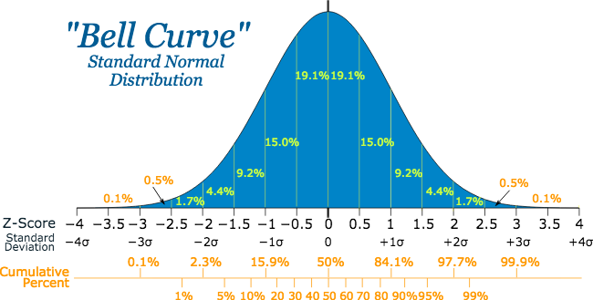

Normal (Gaussian) Distribution

- Notation:
- $$N ∼ N(\mu, \sigma^2)$$
- Interpretation:
- Normal distribution reveals the distribution of sample data when we are taking a large amount of sample of same size from population independently. Normal distribution helps statisticians to figure out the properties about population by only looking at a small proportion of population.
- Type:
- Continuous
- Parameter(s):
- $$\mu$$ - the mean as well as the symmetric point of normal distribution. It decides the center of normal distribution
- $$\sigma^2$$- the variance of normal distribution. It decides the spread of normal distribution. Standard deviation of normal distribution is the square root of its variance.
- Probability Density Function:
- $$f(x)=\dfrac{1}{\sigma \sqrt{2\pi}} \text{exp}\left{-\dfrac{1}{2} \left(\dfrac{x-\mu}{\sigma}\right)^2\right}$$
- Range:
- $$\mu \in (-\infty, \infty)$$
- $$\sigma^2 \in(0, \infty)$$
- $$x \in (-\infty, \infty)$$
- Mean:
- $$E(N) = \mu$$
- Variance:
- $$ Var(N) = 2$$
Application:
- The normal distribution is one of the most important probability distribution in hypothesis testing and is often used in natural and social sciences to represent real-valued random variables whose distribution are unknown.
- An important theorem related to normal distribution is the central limit theorem, which states that the averages of random variables drawn from any independent and identical distribution is normally distributed when the number of random variables becomes sufficiently large.
- Furthermore, normal distribution is very useful also because of its following characteristics:
- All normal curves are bell-shaped with fixed relative percentile.
- All normal curves are symmetric about the mean
- The probability is maximum at x=, the highest point of normal distribution
- The empirical rule states that about 68% of values drawn from a normal distribution are within one standard deviation away from the mean; about 95% of the values lie within two standard deviations; about 99.7% are within three standard deviations away from the mean.
- Because of its nice properties, gaussian distribution and multivariate gaussian distribution, the generalization of the gaussian distribution to higher dimensions, are also often used in machine learning classifiers.
